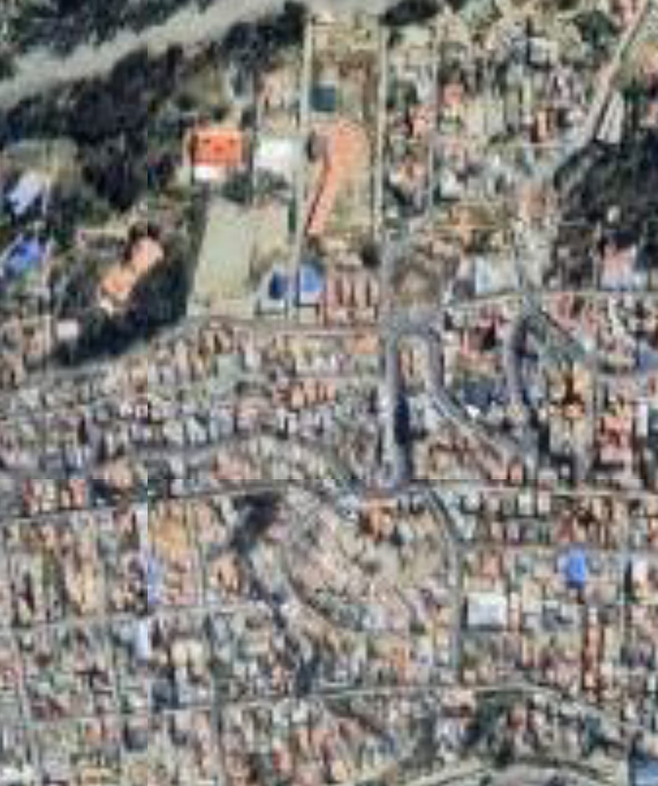
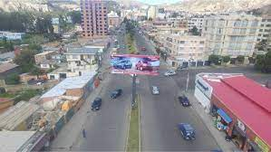
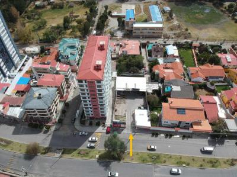
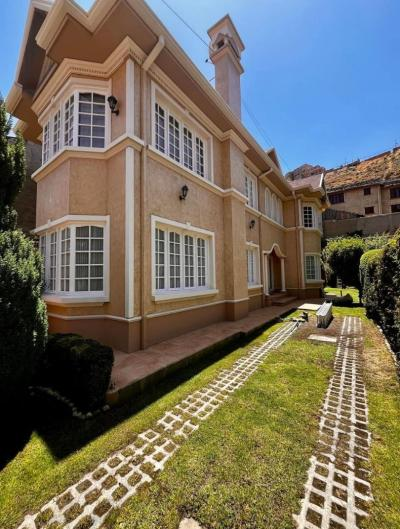

SOBRE EL TERRENO
Descubre tu espacio ideal en Cota Cota, La Paz. Un terreno con vistas increíbles, seguridad y tranquilidad, perfecto para construir tu hogar o invertir. Ubicado estratégicamente cerca de rutas principales y con todos los servicios disponibles. Haz clic para ver su ubicación exacta en Google Maps y contáctanos para más información.
¿POR QUÉ INVERTIR AQUÍ?

Vista panorámica

Departamentos lujosos

Buenos condominios
COMENTARIOS
@Laura: “Invertí aquí y fue la mejor decisión. Vistas increíbles y zona segura.”
@Miguel: “La plusvalía en Cota Cota sigue creciendo, excelente oportunidad.”
@Lesandro: “El mejor lugar está en Cota Cota.”